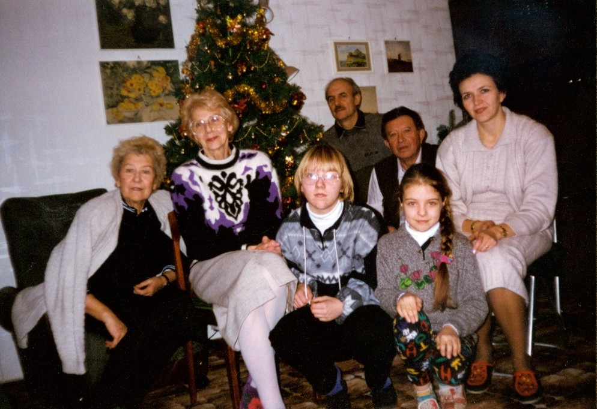
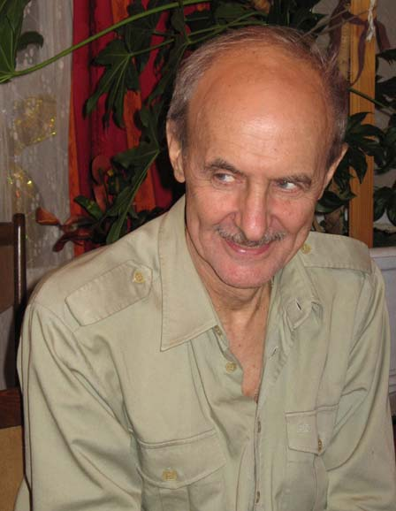

Родился 25 апреля 1940 года в Симферополе.
Родители:
отец - Янчевский Аркадий Николаевич,
мать - Янчевская (Баккал) Елена Соломоновна.
Воспитывался бабушкой Фаней и дедушкой Соломоном, т.к. мать угнали на работы в Германию и связь с ней была потеряна на долгие годы.
Закончил Московский автодорожный техникум и, после службы в армии, поступил в Московский автомобильно-дорожный институт (МАДИ).
В 1968 году окончил МАДИ по специальности ремонт и обслуживание автомобилей.
В 1983 году женился (второй раз) на Марине Николаевне Паниной.
В 1988 году у них родилась дочь, Елена.
Работал шофером, механиком, инженером. С 1974 года преподаватель МАДИ по автомобильному сервису. Кандидат технических наук, профессор. Научная специализация – эксплуатация и обслуживание автомобильных шин. Специалист очень высокого класса в этой области. Регулярно публикует статьи в технических журналах.
В 1940 году сестра родила сына и, таким образом, в 12 лет я оказался дядей. Появление в нашей семье Вадима, привело к тому, что я почувствовал себя гораздо свободнее, так как мои родители почти всё своё внимание обратили к внуку. Меня это вполне устраивало. Года через два, я заметил, что техника - это наше общее хобби. Отлично помню случай, который показал, что наше умственное развитие в то время тоже было почти одинаковое. Однажды, когда я, сидя на полу, ремонтировал его велосипед, он всё время пытался проверить с помощью молотка, надёжность разобранных частей. Особенно его внимание привлекала небольшая прокладка. Мне это мешало моей работе, отвлекало и злило. Не зная, что делать, я взял и спрятал злополучную прокладку в волосах, на своей голове. То, что это была "гениальная" идея, убедил меня удар молотком по моей макушке. На моё счастье, это был небольшой детский молоточек.
Из воспоминаний Анатолия Янчевского (Баккала).

